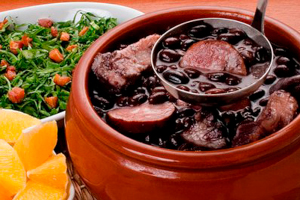

Feijoada

How to make a tasty feijoada
Feijoada is a hearty black bean stew recipe made with meat, black beans, garlic and it's the national dish of Brazil. Served over rice, it’s a filling meal to warm you up on a chilly winter day. It also pairs well with collard greens!
Want to make a feijoada and impress friends? Follow the steps and enjoy the meal!
Ingredients
- 1 pound (450g) dry black beans
- 4 tablespoons extra virgin olive oil
- 1 pound (450g) pork shoulder
- 2 large onions, sliced
- 1 head garlic, peeled and chopped
- 1 pound (450g) carne seca or corned beef, cut into chunks
- 1/2 pound (225g) fresh sausages, such as chorizo or Italian sausage
- 1 pound (450g) smoked sausage, such as linguica or kielbasa
- 1 smoked ham hock or shank
- 3 to 4 bay leaves
- Water
- Kosher salt
Steps
- Soak the beans in hot water: Pour boiling water over the black beans and let them sit while you prepare the rest of the stew.
- Brown the pork shoulder: Heat the olive oil in a large pot over medium-high heat and brown the pork shoulder. When the meat has browned, remove the meat from the pot, set aside.
- Brown the onions and add garlic: Add the onions to the pot. Brown them, stirring occasionally, scraping up any browned bits from the bottom of the pot. Sprinkle a little salt over the onions and add the garlic. Stir well and sauté 2 more minutes.
- Add the meat, bay leaves, and water: Add back the pork shoulder and the other meats. Add enough water to cover all ingredients. Add the bay leaves, cover, and bring to a simmer. Cook gently for 1 hour.
- Add the soaked black beans:Drain the black beans from their soaking liquid and add them to the stew. Simmer gently, covered, until the beans are tender, about an hour and a half.